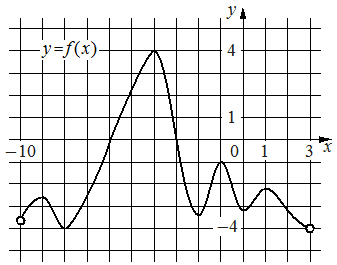

Авторский разбор и аудит предварительны; внешней экспертизы нет.
Модель автора: claude-opus-5-5 (opus; effort=low); в основных частотах: True ·
Впишите правильный ответ.
На рисунке изображён график функции , определённой
на интервале . Найдите количество корней уравнения , принадлежащих отрезку .

КЭС: 4.2 Применение производной к исследованию функций на монотонность и экстремумы. Нахождение наибольшего и наименьшего значения функции на отрезке
5
| ID / вход | Действие | Результат | Локальные KC |
|---|---|---|---|
| s1 · condition | Найти по графику функции все точки локальных экстремумов (вершины и впадины гладкого графика), в которых f'(x)=0 | Точки экстремума: максимум около x=-9, минимум около x=-8, максимум при x=-4, далее чередующиеся минимум, максимум, минимум, максимум на участке от примерно -2 до примерно 1,5 | kc1 |
| s2 · s1, condition | Отобрать точки экстремума, принадлежащие отрезку [-7; 2], и подсчитать их | На отрезке лежат 5 точек: максимум при x=-4 и четыре экстремума на участке от -2 до 1,5; точки около -9 и -8 вне отрезка | kc2 |
[
{
"id": "m1",
"name": "Подсчёт нулей производной через экстремумы на графике функции с отбором по отрезку",
"step_ids": [
"s1",
"s2"
]
}
]Вход: график дифференцируемой функции. Операция: найти точки, где касательная горизонтальна (локальные максимумы и минимумы гладкого графика), как корни уравнения f'(x)=0. Граница: функция дифференцируема на интервале; горизонтальные участки и перегибы с горизонтальной касательной требуют отдельного учёта.
{
"local_kc_id": "kc1",
"status": "new_candidate",
"catalog_kc_id": null,
"evidence": [
{
"ref": "step:s1:action",
"quote": "Найти по графику функции все точки локальных экстремумов (вершины и впадины гладкого графика), в которых f'(x)=0"
},
{
"ref": "image:assets/d5312de06fd1c84529e502f6.png",
"region_description": "Гладкий график y=f(x) на (-10;3): максимум около x=-9, минимум около x=-8, максимум около x=-4 (y=4), минимум около x=-2, максимум около x=0, минимум около x=0,5, максимум около x=1,5"
}
],
"context_refs": [
"condition",
"image:assets/d5312de06fd1c84529e502f6.png"
],
"alternatives_checked": [
{
"catalog_kc_id": "stationary_point",
"reason": "Решение уравнения f'=0 по формуле с отбором; здесь нули производной распознаются по форме графика функции, без вычисления, и отбор вынесен в s2"
},
{
"catalog_kc_id": "literal_9aee0783618d",
"reason": "Чтение знака по графику производной, а дан график самой функции"
},
{
"catalog_kc_id": "local_extreme_sign",
"reason": "Вывод о типе экстремума по смене знака производной; здесь обратная операция — экстремумы гладкого графика как нули f'"
},
{
"catalog_kc_id": "graph_coordinates",
"reason": "Считывание координат отмеченных точек, без связи с производной"
}
],
"rationale": "Операция: по графику дифференцируемой функции распознать точки горизонтальной касательной (локальные экстремумы) как корни f'(x)=0. В каталоге нет узла для графического определения нулей производной по графику функции.",
"proposal": {
"name": "Определять нули производной по графику функции",
"definition": "По графику дифференцируемой функции найти точки с горизонтальной касательной (локальные экстремумы гладкого графика) как корни f'(x)=0; горизонтальные участки и точки перегиба с горизонтальной касательной учитывать отдельно."
},
"blocking": false,
"issue_ids": []
}Вход: множество точек и промежуток. Операция: проверить принадлежность каждой точки промежутку с учётом включения концов и подсчитать подходящие. Граница: точки, читаемые по рисунку приблизительно, должны однозначно лежать внутри или вне промежутка.
{
"local_kc_id": "kc2",
"status": "match",
"catalog_kc_id": "literal_6ad8f502588e",
"evidence": [
{
"ref": "step:s2:action",
"quote": "Отобрать точки экстремума, принадлежащие отрезку [-7; 2], и подсчитать их"
},
{
"ref": "step:s2:result",
"quote": "На отрезке лежат 5 точек"
}
],
"context_refs": [
"step:s1:result",
"condition"
],
"alternatives_checked": [
{
"catalog_kc_id": "literal_8409c9003f48",
"reason": "Отбор найденных корней по границам; близко, но 6ad8f502588e явно включает подсчёт допустимых точек, что соответствует действию"
},
{
"catalog_kc_id": "periodic_interval",
"reason": "Нет периодических серий"
},
{
"catalog_kc_id": "stationary_point",
"reason": "Включает решение f'=0, которое здесь выполнено в s1"
}
],
"rationale": "Проверка принадлежности конечного набора кандидатов из s1 отрезку [-7;2] и подсчёт допустимых; точки около -9 и -8 исключены, остальные лежат внутри с запасом. Результат 5 согласуется с рисунком.",
"proposal": null,
"blocking": false,
"issue_ids": []
}[ "Абсциссы экстремумов на участке около нуля читаются по рисунку приблизительно; все они находятся внутри отрезка с запасом." ]
[]
{
"author_path": "data/annotation/runs/2026-11-07-fipi-team-bogdan108-051-150/raw/author/BE1DDB.json",
"auditor_path": "data/annotation/runs/2026-11-07-fipi-team-bogdan108-051-150/raw/auditor/BE1DDB.json",
"accepted_after_review": null
}